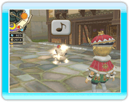

25
|
Stemming |
 |
Je zult waarschijnlijk opmerken dat de burgers fonkelen wanneer de koning met hen spreekt.
Dit wijst erop dat de burger gelukkig is. Burgers gelukkig maken, draagt bij tot een stijging van de stemmingmeter die bovenaan de linkerkant van het scherm staat. Er zijn andere manieren om de stemmingmeter te doen stijgen. Als je tegemoet komt aan de wensen van je burgers of als ze in bakkerijen of grootwarenhuizen iets speciaals vinden, dan zal de stemmingmeter stijgen. Zodra de stemmingmeter vol is, krijg je extra inkomsten die als "morale bonus" (stemmingbonus) in het dagelijkse financiële verslag verschijnen. Een volledige stemmingmeter produceert een moreelsfeer die door de koning kan worden gebruikt om het koninkrijk verder te verbeteren. Het aantal moreelsferen die kunnen worden verzameld, stijgt met het aantal bakkerijen en grootwarenhuizen in het koninkrijk. |
● Moreelsferen gebruiken
・Stemmingverspreiding  Roep Chime op wanneer je over een moreesfeer beschikt om deze goede stemming op je inwoners te verspreiden. Als je tijdens deze periode met stedelingen op straat spreekt, kun je het geluksniveau van hun families verhogen. Als je tijdens deze periode met avonturiers spreekt, zullen hun statistieken ook tijdelijk omhoog worden geduwd. Roep Chime op wanneer je over een moreesfeer beschikt om deze goede stemming op je inwoners te verspreiden. Als je tijdens deze periode met stedelingen op straat spreekt, kun je het geluksniveau van hun families verhogen. Als je tijdens deze periode met avonturiers spreekt, zullen hun statistieken ook tijdelijk omhoog worden geduwd.・Ontwikkeling van je koninkrijk  Je kunt moreelsferen uit het kasteelmenu gebruiken om het koninkrijk te ontwikkelen. Je kunt moreelsferen uit het kasteelmenu gebruiken om het koninkrijk te ontwikkelen.Zo stimuleer je de welvaart van je koninkrijk en kan je meer opdrachten ophangen. Je krijgt ook informatie over de wensen van je burgers. Het vervullen van deze wensen zal in een verdere verhoging van de stemming resulteren. Er zijn ook andere voordelen als je het koninkrijk verder ontwikkelt: wees dus aandachtig! |
● Jubelstemming
Er heerst een jubelstemming in het koninkrijk wanneer avonturiers in de kerkers hun doelstellingen hebben bereikt. Door de jubelstemming krijgt de koning een bonus voor alle actie die de stemming van de burgers kan verbeteren. Gebruik deze toestand van euforie om de stemming nog verder te verbeteren. |
 |
 |
 |